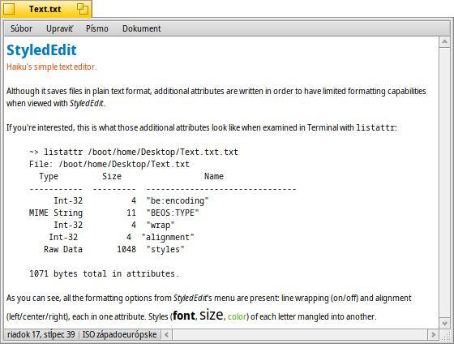

Slovenčina
Slovenčina Français
Français Deutsch
Deutsch Italiano
Italiano Русский
Русский Español
Español Svenska
Svenska 日本語
日本語 Українська
Українська 中文 ［中文］
中文 ［中文］ Português
Português Suomi
Suomi Magyar
Magyar Português (Brazil)
Português (Brazil) English
EnglishStyledEdit
| Panel: | ||
| Umiestnenie: | /boot/system/apps/StyledEdit | |
| Nastavenia: | žiadne |
StyleEdit je jednoduchý textový editor Haiku. Hoci ukladá súbory ako obyčajný text, zapisuje aj ďalšie atribúty tak, aby umožnil isté obmedzené možnosti formátovania pri prehliadaní v StyledEdit.
Ak vás to zaujíma, takto vyzerajú ďalšie atribúty, keď si ich pozriete v Termináli príkazom listattr:
~> listattr /boot/home/Desktop/test.txt
File: /boot/home/Desktop/test.txt
Type Size Name
----------- --------- -------------------------------
Int-32 4 "be:encoding"
MIME String 11 "BEOS:TYPE"
Int-32 4 "wrap"
Int-32 4 "alignment"
Raw Data 1048 "styles"
1071 bytes total in attributes.
Ako môžte vidieť, sú tu prítomné všetky možnosti formátovania menu StyleEdit: zalamovanie riadkov (zapnuté/vypnuté) a zarovnanie (vľavo/v strede/vpravo), každé ako jeden atribút. Štýly (písmo, veľkosť, farba) každého písmena natlačené v inom.
V každom prípade, je obrý nápad mať možnosť farebného textu v rôznych písmach a veľkostiach, a pritom je to stále textový súbor. ReadMe.txt, napríklad, je čitateľný v prostredí každej platformy a stále to má nejaký štýl, keď je zobrazený dvojitým kliknutím v Haiku.
V skutočnosti používanie StyleEditu je jednoduché, preskočíme vysvetľovanie každej banálnej položky menu. Iba napíšte svoj text a potom vyberte slová, ktoré chcete upraviť a aplikujte písmo, veľkosť a farbu z ponuky . Zalamovanie riadkov a zarovnanie z ponuky funguje iba na celý súbor.